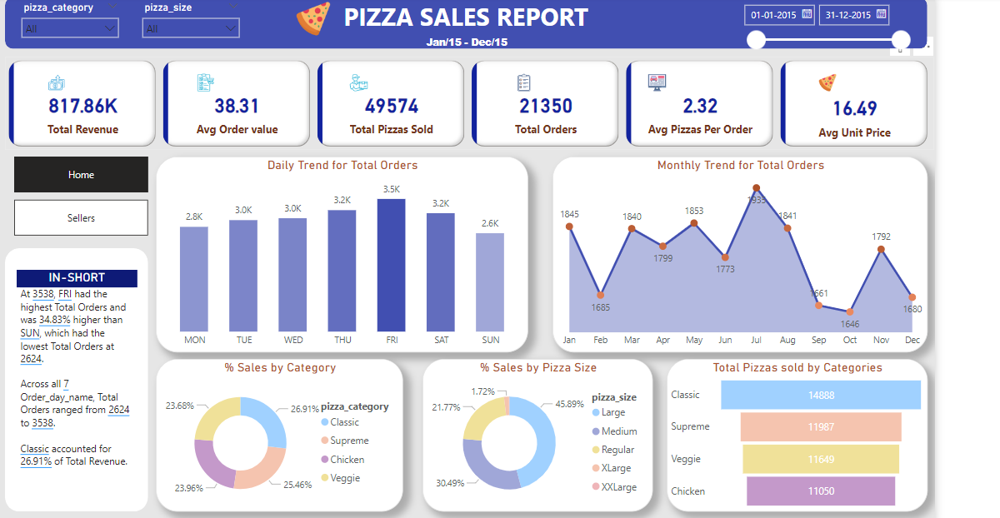
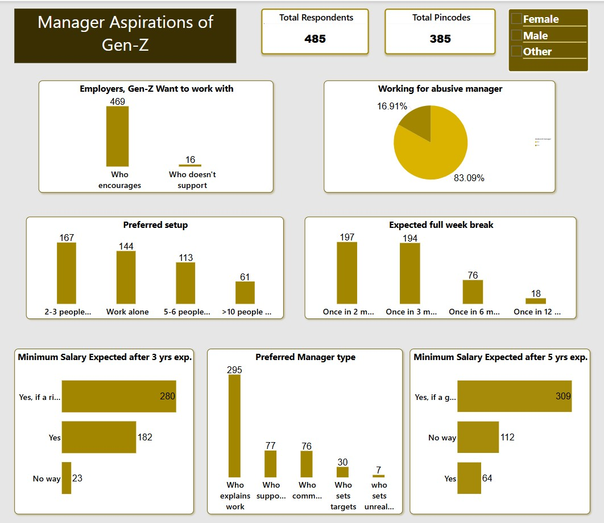
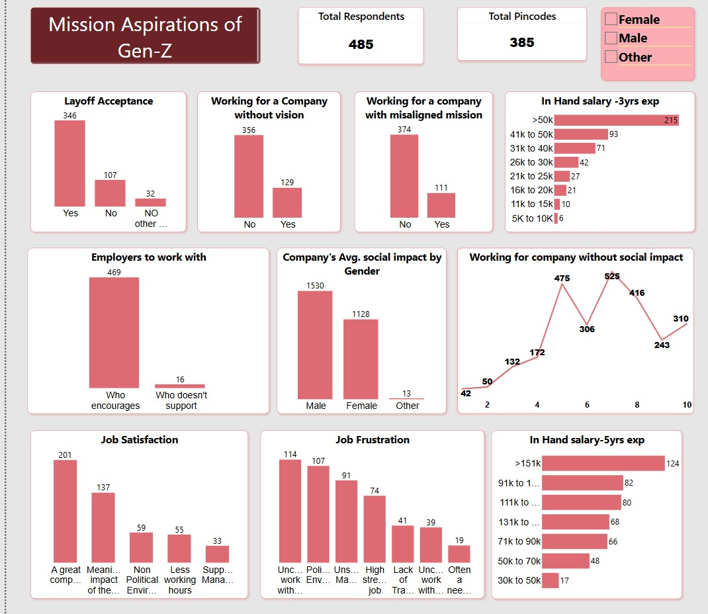
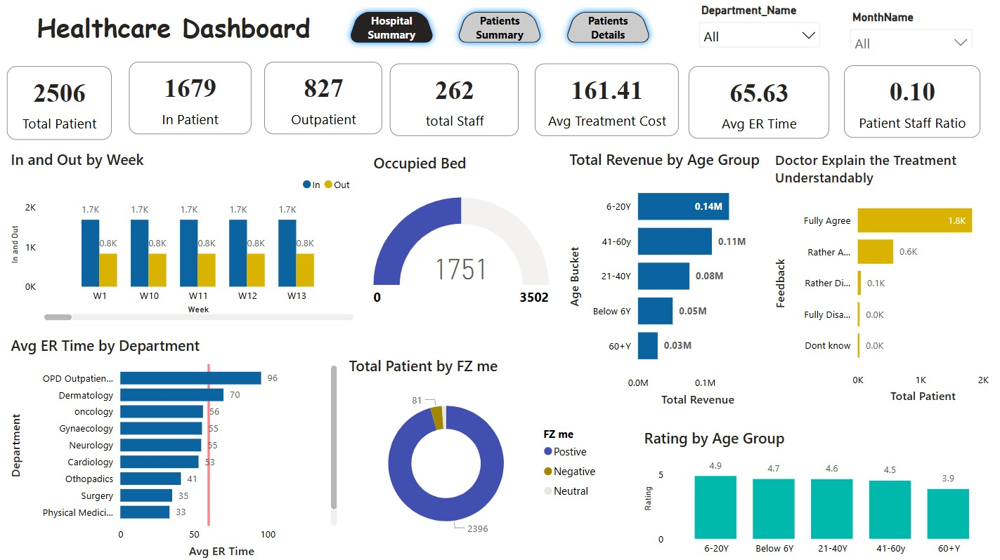
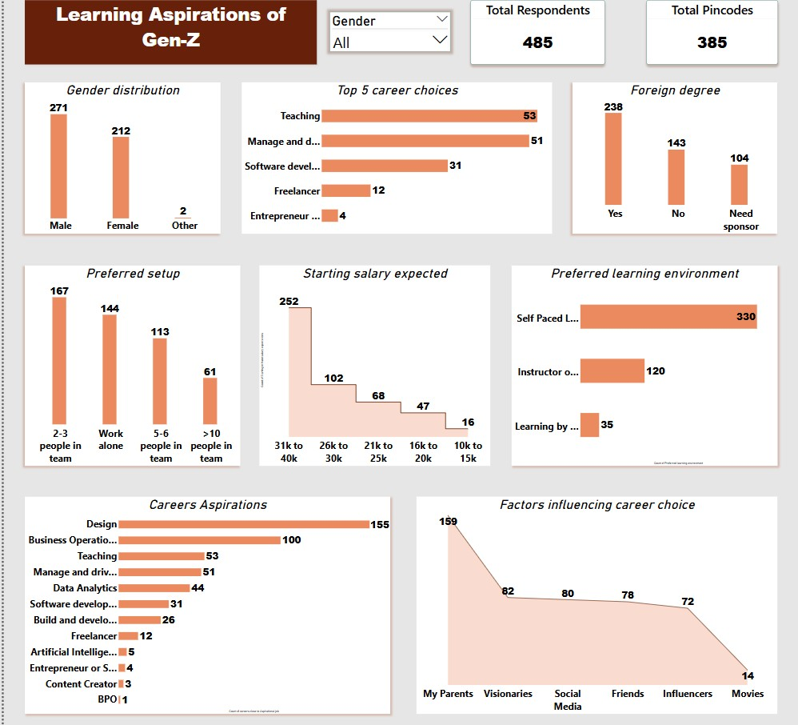
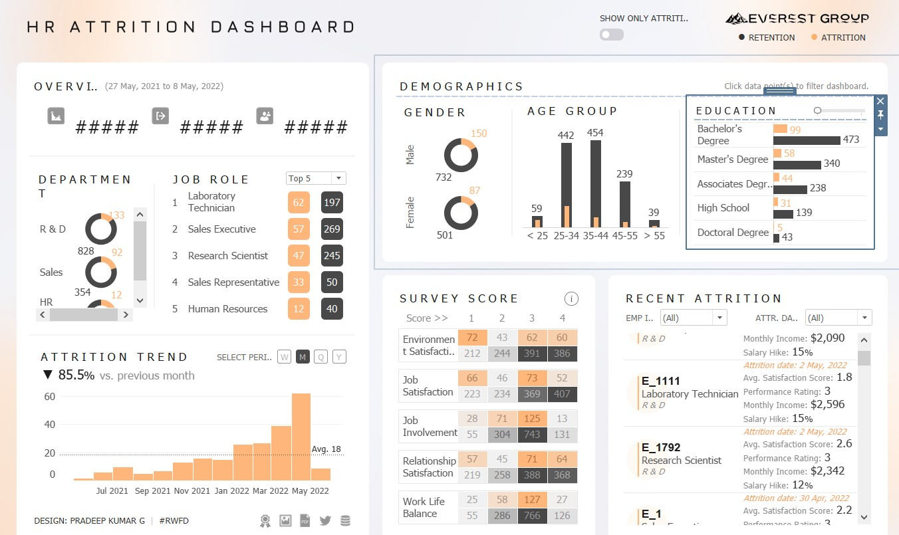

Hi, I'm Kareem Basha Shaik
A data-driven problem solver, skilled in Python, SQL, and Power BI, with experience in healthcare data analytics and workflow optimization. As a U.S. Healthcare Claims Examiner at Carelon Global Solutions, I analyze complex datasets and drive efficiency.
I hold a B.Sc. in Computer Applications from Rayalaseema University and am actively seeking a full-time Data Analyst role to apply my expertise in data analytics, automation, and strategic decision-making.
Mobile: +91 9573434890
Streamlit Apps
Finance Related Project
Billing Loss Prediction Dashboard
This project identifies unbilled hours and revenue leakage in a service-based company by analyzing employee, project, and timesheet data. The dashboard highlights financial loss by employee, project, department, and reason code with clear KPIs and visuals.
AI-driven capabilities such as forecasting, key influencers, smart narrative, and what-if simulation help uncover root causes and predict future loss. This solution reduces manual reporting, improves visibility, and promotes faster, data-driven financial decisions.
Machine Learning Projects
Projects
Pizza Sales Dashboard
Revenue trends, customer preferences, and time-based analysis.
Manager Aspirations of Gen-Z
Highlights leadership & culture preferences of emerging workforce.
Mission Aspirations of Gen-Z
Understand Gen-Z values, growth goals, and company expectations.
Healthcare Dashboard
Patient flow, cost insights, satisfaction, and KPIs.
Learning Aspirations of Gen-Z
Captures Gen-Z learning styles and early career motivations.
HR Attrition Dashboard
Attrition trends, demographics, and satisfaction scores.
Pizza Sales Dashboard
Revenue trends, customer preferences, and time-based analysis.
Manager Aspirations of Gen-Z

Highlights leadership & culture preferences of emerging workforce.
Certificates
Contact
Feel free to reach out to me for job opportunities, collaborations, or project discussions.
Email: kareembashashaik2401@gmail.com
Mobile: +91 95734 34890